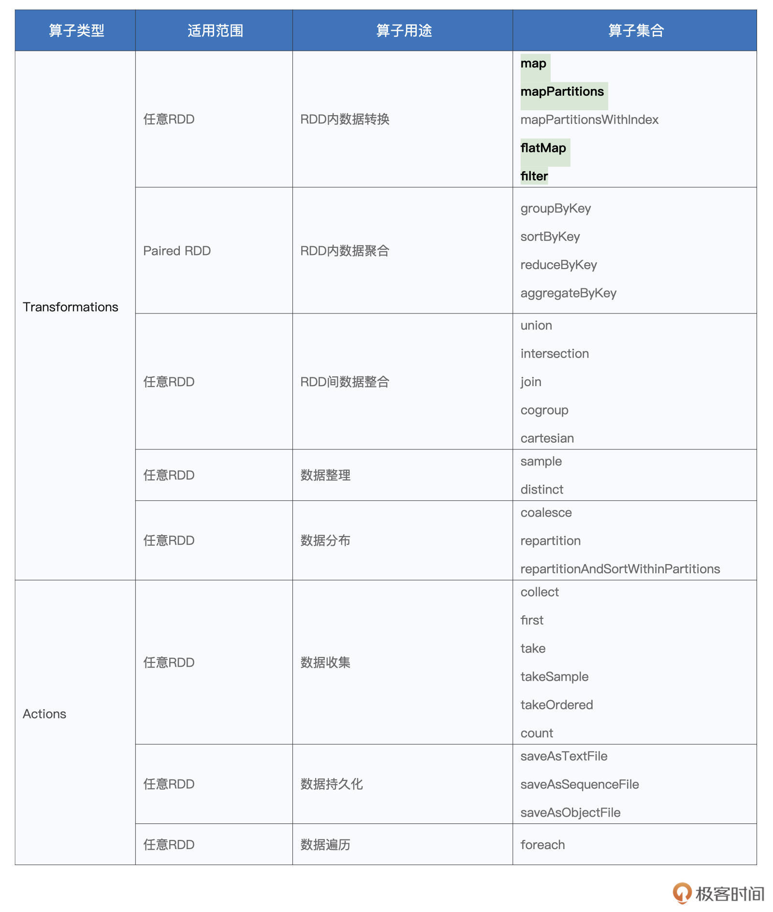
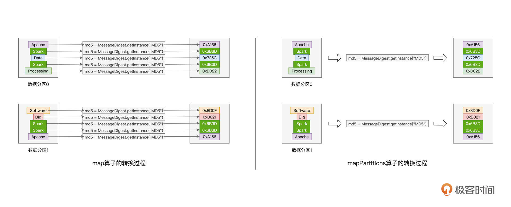
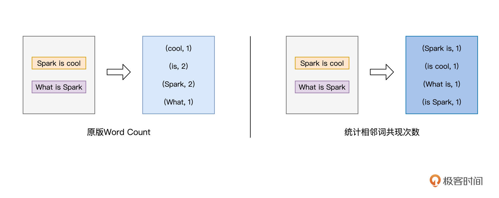
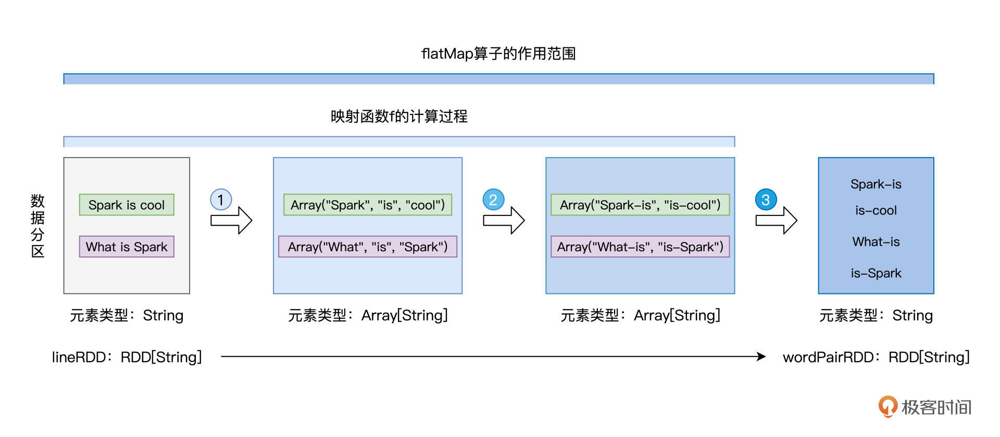

- 00 开篇词 入门Spark，你需要学会“三步走”.md.html
- 01 Spark：从“大数据的Hello World”开始.md.html
- 02 RDD与编程模型：延迟计算是怎么回事？.md.html
- 03 RDD常用算子（一）：RDD内部的数据转换.md.html
- 04 进程模型与分布式部署：分布式计算是怎么回事？.md.html
- 05 调度系统：如何把握分布式计算的精髓？.md.html
- 06 Shuffle管理：为什么Shuffle是性能瓶颈？.md.html
- 07 RDD常用算子（二）：Spark如何实现数据聚合？.md.html
- 08 内存管理：Spark如何使用内存？.md.html
- 09 RDD常用算子（三）：数据的准备、重分布与持久化.md.html
- 10 广播变量 & 累加器：共享变量是用来做什么的？.md.html
- 11 存储系统：数据到底都存哪儿了？.md.html
- 12 基础配置详解：哪些参数会影响应用程序稳定性？.md.html
- 13 Spark SQL：让我们从“小汽车摇号分析”开始.md.html
- 14 台前幕后：DataFrame与Spark SQL的由来.md.html
- 15 数据源与数据格式：DataFrame从何而来？.md.html
- 16 数据转换：如何在DataFrame之上做数据处理？.md.html
- 17 数据关联：不同的关联形式与实现机制该怎么选？.md.html
- 18 数据关联优化：都有哪些Join策略，开发者该如何取舍？.md.html
- 19 配置项详解：哪些参数会影响应用程序执行性能？.md.html
- 20 Hive + Spark强强联合：分布式数仓的不二之选.md.html
- 21 Spark UI（上）：如何高效地定位性能问题？.md.html
- 22 Spark UI（下）：如何高效地定位性能问题？.md.html
- 23 Spark MLlib：从“房价预测”开始.md.html
- 24 特征工程（上）：有哪些常用的特征处理函数？.md.html
- 25 特征工程（下）：有哪些常用的特征处理函数？.md.html
- 26 模型训练（上）：决策树系列算法详解.md.html
- 27 模型训练（中）：回归、分类和聚类算法详解.md.html
- 28 模型训练（下）：协同过滤与频繁项集算法详解.md.html
- 29 Spark MLlib Pipeline：高效开发机器学习应用.md.html
- 30 Structured Streaming：从“流动的Word Count”开始.md.html
- 31 新一代流处理框架：Batch mode和Continuous mode哪家强？.md.html
- 32 Window操作&Watermark：流处理引擎提供了哪些优秀机制？.md.html
- 33 流计算中的数据关联：流与流、流与批.md.html
- 34 Spark + Kafka：流计算中的“万金油”.md.html
- 用户故事 小王：保持空杯心态，不做井底之蛙.md.html
- 结束语 进入时间裂缝，持续学习.md.html
- 捐赠
03 RDD常用算子（一）：RDD内部的数据转换
你好，我是吴磊。
在上一讲的最后，我们用一张表格整理了Spark官网给出的RDD算子。想要在Spark之上快速实现业务逻辑，理解并掌握这些算子无疑是至关重要的。
因此，在接下来的几讲，我将带你一起梳理这些常见算子的用法与用途。不同的算子，就像是厨房里的炒勺、铲子、刀具和各式各样的锅碗瓢盆，只有熟悉了这些“厨具”的操作方法，才能在客人点餐的时候迅速地做出一桌好菜。
今天这一讲，我们先来学习同一个RDD内部的数据转换。掌握RDD常用算子是做好Spark应用开发的基础，而数据转换类算子则是基础中的基础，因此我们优先来学习这类RDD算子。
在这些算子中，我们重点讲解的就是map、mapPartitions、flatMap、filter。这4个算子几乎囊括了日常开发中99%的数据转换场景，剩下的mapPartitionsWithIndex，我把它留给你作为课后作业去探索。

俗话说，巧妇难为无米之炊，要想玩转厨房里的厨具，我们得先准备好米、面、油这些食材。学习RDD算子也是一样，要想动手操作这些算子，咱们得先有RDD才行。
所以，接下来我们就一起来看看RDD是怎么创建的。
创建RDD
在Spark中，创建RDD的典型方式有两种：
- 通过SparkContext.parallelize在内部数据之上创建RDD；
- 通过SparkContext.textFile等API从外部数据创建RDD。
这里的内部、外部是相对应用程序来说的。开发者在Spark应用中自定义的各类数据结构，如数组、列表、映射等，都属于“内部数据”；而“外部数据”指代的，是Spark系统之外的所有数据形式，如本地文件系统或是分布式文件系统中的数据，再比如来自其他大数据组件（Hive、Hbase、RDBMS等）的数据。
第一种创建方式的用法非常简单，只需要用parallelize函数来封装内部数据即可，比如下面的例子：
import org.apache.spark.rdd.RDD
val words: Array[String] = Array("Spark", "is", "cool")
val rdd: RDD[String] = sc.parallelize(words)
你可以在spark-shell中敲入上述代码，来直观地感受parallelize创建RDD的过程。通常来说，在Spark应用内定义体量超大的数据集，其实都是不太合适的，因为数据集完全由Driver端创建，且创建完成后，还要在全网范围内跨节点、跨进程地分发到其他Executors，所以往往会带来性能问题。因此，parallelize API的典型用法，是在“小数据”之上创建RDD。
要想在真正的“大数据”之上创建RDD，我们还得依赖第二种创建方式，也就是通过SparkContext.textFile等API从外部数据创建RDD。由于textFile API比较简单，而且它在日常的开发中出现频率比较高，因此我们使用textFile API来创建RDD。在后续对各类RDD算子讲解的过程中，我们都会使用textFile API从文件系统创建RDD。
为了保持讲解的连贯性，我们还是使用第一讲中的源文件wikiOfSpark.txt来创建RDD，代码实现如下所示：
import org.apache.spark.rdd.RDD
val rootPath: String = _
val file: String = s"${rootPath}/wikiOfSpark.txt"
// 读取文件内容
val lineRDD: RDD[String] = spark.sparkContext.textFile(file)
好啦，创建好了RDD，我们就有了可以下锅的食材。接下来，咱们就要正式地走进厨房，把铲子和炒勺挥起来啦。
RDD内的数据转换
首先，我们先来认识一下map算子。毫不夸张地说，在所有的RDD算子中，map“出场”的概率是最高的。因此，我们必须要掌握map的用法与注意事项。
map：以元素为粒度的数据转换
我们先来说说map算子的用法：给定映射函数f，map(f)以元素为粒度对RDD做数据转换。其中f可以是带有明确签名的带名函数，也可以是匿名函数，它的形参类型必须与RDD的元素类型保持一致，而输出类型则任由开发者自行决定。
这种照本宣科的介绍听上去难免会让你有点懵，别着急，接下来我们用些小例子来更加直观地展示map的用法。
在[第一讲]的Word Count示例中，我们使用如下代码，把包含单词的RDD转换成元素为（Key，Value）对的RDD，后者统称为Paired RDD。
// 把普通RDD转换为Paired RDD
val cleanWordRDD: RDD[String] = _ // 请参考第一讲获取完整代码
val kvRDD: RDD[(String, Int)] = cleanWordRDD.map(word => (word, 1))
在上面的代码实现中，传递给map算子的形参，即：word => （word，1），就是我们上面说的映射函数f。只不过，这里f是以匿名函数的方式进行定义的，其中左侧的word表示匿名函数f的输入形参，而右侧的（word，1）则代表函数f的输出结果。
如果我们把匿名函数变成带名函数的话，可能你会看的更清楚一些。这里我用一段代码重新定义了带名函数f。
// 把RDD元素转换为（Key，Value）的形式
// 定义映射函数f
def f(word: String): (String, Int) = {
return (word, 1)
}
val cleanWordRDD: RDD[String] = _ // 请参考第一讲获取完整代码
val kvRDD: RDD[(String, Int)] = cleanWordRDD.map(f)
可以看到，我们使用Scala的def语法，明确定义了带名映射函数f，它的计算逻辑与刚刚的匿名函数是一致的。在做RDD数据转换的时候，我们只需把函数f传递给map算子即可。不管f是匿名函数，还是带名函数，map算子的转换逻辑都是一样的，你不妨把以上两种实现方式分别敲入到spark-shell，去验证执行结果的一致性。
到这里为止，我们就掌握了map算子的基本用法。现在你就可以定义任意复杂的映射函数f，然后在RDD之上通过调用map(f)去翻着花样地做各种各样的数据转换。
比如，通过定义如下的映射函数f，我们就可以改写Word Count的计数逻辑，也就是把“Spark”这个单词的统计计数权重提高一倍：
// 把RDD元素转换为（Key，Value）的形式
// 定义映射函数f
def f(word: String): (String, Int) = {
if (word.equals("Spark")) { return (word, 2) }
return (word, 1)
}
val cleanWordRDD: RDD[String] = _ // 请参考第一讲获取完整代码
val kvRDD: RDD[(String, Int)] = cleanWordRDD.map(f)
尽管map算子足够灵活，允许开发者自由定义转换逻辑。不过，就像我们刚刚说的，map(f)是以元素为粒度对RDD做数据转换的，在某些计算场景下，这个特点会严重影响执行效率。为什么这么说呢？我们来看一个具体的例子。
比方说，我们把Word Count的计数需求，从原来的对单词计数，改为对单词的哈希值计数，在这种情况下，我们的代码实现需要做哪些改动呢？我来示范一下：
// 把普通RDD转换为Paired RDD
import java.security.MessageDigest
val cleanWordRDD: RDD[String] = _ // 请参考第一讲获取完整代码
val kvRDD: RDD[(String, Int)] = cleanWordRDD.map{ word =>
// 获取MD5对象实例
val md5 = MessageDigest.getInstance("MD5")
// 使用MD5计算哈希值
val hash = md5.digest(word.getBytes).mkString
// 返回哈希值与数字1的Pair
(hash, 1)
}
由于map(f)是以元素为单元做转换的，那么对于RDD中的每一条数据记录，我们都需要实例化一个MessageDigest对象来计算这个元素的哈希值。
在工业级生产系统中，一个RDD动辄包含上百万甚至是上亿级别的数据记录，如果处理每条记录都需要事先创建MessageDigest，那么实例化对象的开销就会聚沙成塔，不知不觉地成为影响执行效率的罪魁祸首。
那么问题来了，有没有什么办法，能够让Spark在更粗的数据粒度上去处理数据呢？还真有，mapPartitions和mapPartitionsWithIndex这对“孪生兄弟”就是用来解决类似的问题。相比mapPartitions，mapPartitionsWithIndex仅仅多出了一个数据分区索引，因此接下来我们把重点放在mapPartitions上面。
mapPartitions：以数据分区为粒度的数据转换
按照介绍算子的惯例，我们还是先来说说mapPartitions的用法。mapPartitions，顾名思义，就是以数据分区为粒度，使用映射函数f对RDD进行数据转换。对于上述单词哈希值计数的例子，我们结合后面的代码，来看看如何使用mapPartitions来改善执行性能：
// 把普通RDD转换为Paired RDD
import java.security.MessageDigest
val cleanWordRDD: RDD[String] = _ // 请参考第一讲获取完整代码
val kvRDD: RDD[(String, Int)] = cleanWordRDD.mapPartitions( partition => {
// 注意！这里是以数据分区为粒度，获取MD5对象实例
val md5 = MessageDigest.getInstance("MD5")
val newPartition = partition.map( word => {
// 在处理每一条数据记录的时候，可以复用同一个Partition内的MD5对象
(md5.digest(word.getBytes()).mkString,1)
})
newPartition
})
可以看到，在上面的改进代码中，mapPartitions以数据分区（匿名函数的形参partition）为粒度，对RDD进行数据转换。具体的数据处理逻辑，则由代表数据分区的形参partition进一步调用map(f)来完成。你可能会说：“partition. map(f)仍然是以元素为粒度做映射呀！这和前一个版本的实现，有什么本质上的区别呢？”
仔细观察，你就会发现，相比前一个版本，我们把实例化MD5对象的语句挪到了map算子之外。如此一来，以数据分区为单位，实例化对象的操作只需要执行一次，而同一个数据分区中所有的数据记录，都可以共享该MD5对象，从而完成单词到哈希值的转换。
通过下图的直观对比，你会发现，以数据分区为单位，mapPartitions只需实例化一次MD5对象，而map算子却需要实例化多次，具体的次数则由分区内数据记录的数量来决定。

对于一个有着上百万条记录的RDD来说，其数据分区的划分往往是在百这个量级，因此，相比map算子，mapPartitions可以显著降低对象实例化的计算开销，这对于Spark作业端到端的执行性能来说，无疑是非常友好的。
实际上。除了计算哈希值以外，对于数据记录来说，凡是可以共享的操作，都可以用mapPartitions算子进行优化。这样的共享操作还有很多，比如创建用于连接远端数据库的Connections对象，或是用于连接Amazon S3的文件系统句柄，再比如用于在线推理的机器学习模型，等等，不一而足。你不妨结合实际工作场景，把你遇到的共享操作整理到留言区，期待你的分享。
相比mapPartitions，mapPartitionsWithIndex仅仅多出了一个数据分区索引，这个数据分区索引可以为我们获取分区编号，当你的业务逻辑中需要使用到分区编号的时候，不妨考虑使用这个算子来实现代码。除了这个额外的分区索引以外，mapPartitionsWithIndex在其他方面与mapPartitions是完全一样的。
介绍完map与mapPartitions算子之后，接下来，我们趁热打铁，再来看一个与这两者功能类似的算子：flatMap。
flatMap：从元素到集合、再从集合到元素
flatMap其实和map与mapPartitions算子类似，在功能上，与map和mapPartitions一样，flatMap也是用来做数据映射的，在实现上，对于给定映射函数f，flatMap(f)以元素为粒度，对RDD进行数据转换。
不过，与前两者相比，flatMap的映射函数f有着显著的不同。对于map和mapPartitions来说，其映射函数f的类型，都是（元素） => （元素），即元素到元素。而flatMap映射函数f的类型，是（元素） => （集合），即元素到集合（如数组、列表等）。因此，flatMap的映射过程在逻辑上分为两步：
- 以元素为单位，创建集合；
- 去掉集合“外包装”，提取集合元素。
这么说比较抽象，我们还是来举例说明。假设，我们再次改变Word Count的计算逻辑，由原来统计单词的计数，改为统计相邻单词共现的次数，如下图所示：

对于这样的计算逻辑，我们该如何使用flatMap进行实现呢？这里我们先给出代码实现，然后再分阶段地分析flatMap的映射过程：
// 读取文件内容
val lineRDD: RDD[String] = _ // 请参考第一讲获取完整代码
// 以行为单位提取相邻单词
val wordPairRDD: RDD[String] = lineRDD.flatMap( line => {
// 将行转换为单词数组
val words: Array[String] = line.split(" ")
// 将单个单词数组，转换为相邻单词数组
for (i <- 0 until words.length - 1) yield words(i) + "-" + words(i+1)
})
在上面的代码中，我们采用匿名函数的形式，来提供映射函数f。这里f的形参是String类型的line，也就是源文件中的一行文本，而f的返回类型是Array[String]，也就是String类型的数组。在映射函数f的函数体中，我们先用split语句把line转化为单词数组，然后再用for循环结合yield语句，依次把单个的单词，转化为相邻单词词对。
注意，for循环返回的依然是数组，也即类型为Array[String]的词对数组。由此可见，函数f的类型是（String） => （Array[String]），也就是刚刚说的第一步，从元素到集合。但如果我们去观察转换前后的两个RDD，也就是lineRDD和wordPairRDD，会发现它们的类型都是RDD[String]，换句话说，它们的元素类型都是String。
回顾map与mapPartitions这两个算子，我们会发现，转换前后RDD的元素类型，与映射函数f的类型是一致的。但在flatMap这里，却出现了RDD元素类型与函数类型不一致的情况。这是怎么回事呢？其实呢，这正是flatMap的“奥妙”所在，为了让你直观地理解flatMap的映射过程，我画了一张示意图，如下所示：

不难发现，映射函数f的计算过程，对应着图中的步骤1与步骤2，每行文本都被转化为包含相邻词对的数组。紧接着，flatMap去掉每个数组的“外包装”，提取出数组中类型为String的词对元素，然后以词对为单位，构建新的数据分区，如图中步骤3所示。这就是flatMap映射过程的第二步：去掉集合“外包装”，提取集合元素。
得到包含词对元素的wordPairRDD之后，我们就可以沿用Word Count的后续逻辑，去计算相邻词汇的共现次数。你不妨结合文稿中的代码与第一讲中Word Count的代码，去实现完整版的“相邻词汇计数统计”。
filter：过滤RDD
在今天的最后，我们再来学习一下，与map一样常用的算子：filter。filter，顾名思义，这个算子的作用，是对RDD进行过滤。就像是map算子依赖其映射函数一样，filter算子也需要借助一个判定函数f，才能实现对RDD的过滤转换。
所谓判定函数，它指的是类型为（RDD元素类型） => （Boolean）的函数。可以看到，判定函数f的形参类型，必须与RDD的元素类型保持一致，而f的返回结果，只能是True或者False。在任何一个RDD之上调用filter(f)，其作用是保留RDD中满足f（也就是f返回True）的数据元素，而过滤掉不满足f（也就是f返回False）的数据元素。
老规矩，我们还是结合示例来讲解filter算子与判定函数f。
在上面flatMap例子的最后，我们得到了元素为相邻词汇对的wordPairRDD，它包含的是像“Spark-is”、“is-cool”这样的字符串。为了仅保留有意义的词对元素，我们希望结合标点符号列表，对wordPairRDD进行过滤。例如，我们希望过滤掉像“Spark-&”、“|-data”这样的词对。
掌握了filter算子的用法之后，要实现这样的过滤逻辑，我相信你很快就能写出如下的代码实现：
// 定义特殊字符列表
val list: List[String] = List("&", "|", "#", "^", "@")
// 定义判定函数f
def f(s: String): Boolean = {
val words: Array[String] = s.split("-")
val b1: Boolean = list.contains(words(0))
val b2: Boolean = list.contains(words(1))
return !b1 && !b2 // 返回不在特殊字符列表中的词汇对
}
// 使用filter(f)对RDD进行过滤
val cleanedPairRDD: RDD[String] = wordPairRDD.filter(f)
掌握了filter算子的用法之后，你就可以定义任意复杂的判定函数f，然后在RDD之上通过调用filter(f)去变着花样地做数据过滤，从而满足不同的业务需求。
重点回顾
好啦，到此为止，关于RDD内数据转换的几个算子，我们就讲完了，我们一起来做个总结。今天这一讲，你需要掌握map、mapPartitions、flatMap和filter这4个算子的作用和具体用法。
首先，我们讲了map算子的用法，它允许开发者自由地对RDD做各式各样的数据转换，给定映射函数f，map(f)以元素为粒度对RDD做数据转换。其中f可以是带名函数，也可以是匿名函数，它的形参类型必须与RDD的元素类型保持一致，而输出类型则任由开发者自行决定。
为了提升数据转换的效率，Spark提供了以数据分区为粒度的mapPartitions算子。mapPartitions的形参是代表数据分区的partition，它通过在partition之上再次调用map(f)来完成数据的转换。相比map，mapPartitions的优势是以数据分区为粒度初始化共享对象，这些共享对象在我们日常的开发中很常见，比如数据库连接对象、S3文件句柄、机器学习模型等等。
紧接着，我们介绍了flatMap算子。flatMap的映射函数f比较特殊，它的函数类型是（元素） => （集合），这里集合指的是像数组、列表这样的数据结构。因此，flatMap的映射过程在逻辑上分为两步，这一点需要你特别注意：
- 以元素为单位，创建集合；
- 去掉集合“外包装”，提取集合元素。
最后，我们学习了filter算子，filter算子的用法与map很像，它需要借助判定函数f来完成对RDD的数据过滤。判定函数的类型必须是（RDD元素类型） => （Boolean），也就是形参类型必须与RDD的元素类型保持一致，返回结果类型则必须是布尔值。RDD中的元素是否能够得以保留，取决于判定函数f的返回值是True还是False。
虽然今天我们只学了4个算子，但这4个算子在日常开发中的出现频率非常之高。掌握了这几个简单的RDD算子，你几乎可以应对RDD中90%的数据转换场景。希望你对这几个算子多多加以练习，从而在日常的开发工作中学以致用。
每课一练
讲完了正课，我来给你留3个思考题：
请你结合官网的介绍，自学mapPartitionsWithIndex算子。请你说一说，在哪些场景下可能会用到这个算子？
对于我们今天学过的4个算子，再加上没有详细解释的mapPartitionsWithIndex，你能说说，它们之间有哪些共性或是共同点吗？
你能说一说，在日常的工作中，还遇到过哪些可以在mapPartitions中初始化的共享对象呢？
欢迎你在评论区回答这些练习题。你也可以把这一讲分享给更多的朋友或者同事，和他们一起讨论讨论，交流是学习的催化剂。我在评论区等你。
© 2019 - 2023 Liangliang Lee. Powered by gin and hexo-theme-book.